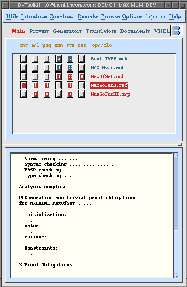

The B-Toolkit comprises a suite of fully integrated software tools designed
to support a rigorous or formal development of software systems using the
B-Method. The tools are accessed through
a custom build X Windows Motif Interface, providing full on-line help facilities.
The B-Method uses the notion of
Abstract Machines to specify
and design software systems. Abstract Machines are specified using the
Abstract Machine Notation (AMN) which
is in turn based on the mathematical theory of Generalised
Substitutions.
The Toolkit also provides a development environment automating the management
of all associated files, ensuring that the entire development, including
code and documentation,
is always in a consistent state. One aspect of this environment is that
the effect of change in a single file on the entire system is communicated
to the user before the decision is made to commit
the change to the system (this information may also be ascertained through
the Status tool for machines,
refinements and implementations).
Currently the Toolkit provides the following tools for supporting software
development:
-
A specification, design and code configuration management system, including
integrity and dependency management and
source file editing facilities.
-
A set of software specification and design analysis
tools, which includes syntax checkers, type checkers and a specification
animator.
-
A set of verification tools, which includes a proof-obligation
generator and fully-automatic,
semi-automatic and fully-interactive
provers, together with a proof
printer for displaying proof obligations/proofs.
-
A set of coding tools, which includes a translator,
linker, rapid
prototyping facilities and a reusable specification/code module
library.
-
Facilities to supplement the reusable
library.
-
A set of generators providing
facilities to generate: base object
AMN specification/implementations (the latter implemented on the reusable
library) from simple declarative descriptions of structured data, enumerators
providing i/o facilities for enumerated sets, and interfaces
(either specification/implementations - again built on the reusable library,
or alternatively on the X/Motif library ) to provide a run time environment.
-
A documentation tool
for automatically producing fully cross-referenced and indexed type-set
documents from source files, together with facilities to display on screen
or send to a printer.
-
A re-making tool for automatically re-checking
and re-generating specifications, designs, code and documentation after
modifications to source files.
-
A hypertext tool providing, in hypertext
form, the facility to navigate through an entire development; each hypertext
construct is automatically built from its Abstract
Machine or code file,
allowing constructs external to the development (for example, informal
requirements) to be hypertext-linked to the formal development.
-
An overview tool providing, in picture
form, the facility to navigate through an entire development via a Motif
push- button interface; it provides views of both specification construction
and design, enabling the user to see a complete picture of the development,
or to zoom in on a particular aspect of it.
Before using the toolkit, the mandatory environment variable BKIT
must be correctly set (see the `B-Toolkit
Installation Guide').
Options may be set to customise the toolkit:
settings for Remake, Construct
Display, Editors/Viewers/Shell,
Documents, Translators/Compilers,
Provers,
Interface, Bell,
Optional Utilites and Teamlib
may be set together with the facliity to save and restore global settings.
The B-Toolkit is invoked by issuing the command BToolkit (this script
residing in the $BKIT directory)
from a suitable development directory - any directory in which you have
read-write permission.
Development Environment
If the toolkit is invoked where there is no existing development environment
(which will be the case when it is invoked for the first time in a directory),
the user is asked whether a new environment should be created. If the reply
is `no' then the Toolkit is exited; if the reply is `yes' a new development
environment, consisting of a set of development directories and configuration
files, is created. The following directories are created if they do not
already exist:
- SRC
- for source files
- CFG
- for files committed to configuration
- ANL
- for the intermediate analysed form
- TYP
- for TypeChecker information
- POB
- for the proof obligation files
- HTX
- for Hypertext files
- TEX
- for typeset document files
- PMD
- for the proof method files
- CDE/C
- for C-program files
- TMP
- for temporary files
The Motif Interface

See figure.
The Motif Interface to the B-Toolkit comprises a Top
Bar, an Information Panel,
a Tool Bar, a Constructs
Area displaying the constructs and the currently available options,
and a Display Area displaying
messages from the toolkit.
The Current Directory, Release Information and information on B are
displayed as push-buttons in the Information
Panel (invoking them will popup help windows displaying appropriate
information). The Environment Label
is located immediately below the Tool Bar (clicking on it will popup a
help window describing the current environment).
The Command Bar is incorporated in the
top frame of the Constructs Area;
clicking on any of the labels will pop up a help window providing a brief
description of each option (including its applicability).
The relative heights of the Constructs
Area and Display Area may
be varied by dragging the pane grip (situated on the right between the
two windows) up or down.
The interface incorporates many popup windows (for sub-menus, option
selection, confirmation and so on) each incorporating a `Help' button providing
a further popup containing help appropriate to that action), in addition
to the main Help facility on the Top Bar. Selection(s) may be made by clicking
on the appropriate item(s) and selecting `OK'; alternatively it is possible
to `double-click' on an item (or the last item in the case where more than
one is being selected). `Cancel' dismisses the popup window.
The appearance of the toolkit may be customised by editing the XBMotif
resources file (you should seek the guidance of your system administrator
if you wish to do this).
Each of the tools mentioned below in outline is described in more detail
elsewhere.
The Top Bar
The Top Bar provides the following facilities:
-
Utilities
-
Release Information (the same as that displayed by the B-logo)
-
Current Directory (displays the current development directory)
-
Change Directory (change development directory
without quitting the toolkit)
-
Save in Remakable Form
(saves the current state of the development)
-
Find Identifier (searches for the occurrence/usage
of an identifier)
-
Shell (opens a shell tool in
the current directory)
-
Optional Utility (invokes
an executable set in the Options)
-
Exit (quits the B-Toolkit)
-
Help (gives a short description of each of the above utilities)
-
Introduce
-
From SRC (provides a menu of
SRC constructs)
-
From SLIB (provides a menu of
SLIB constructs)
-
From TLIB (provides a menu of
TLIB constructs)
-
Help (gives a short description of each of the above utilities)
-
Construct
-
Remake (dependent on the Options
Remake setting)
-
All Constructs
-
Construct(s) (provides a menu of constructs to be remade)
-
Help (gives a short description of each of the above utilities)
-
Browse
-
Hypertext (provides the Hypertext Constructs
display in the Hypertext Viewer)
-
Overview
-
Design (provides a menu of
top-level design nodes)
-
Specification (provides
a menu of top-level specification nodes)
-
Construct (provides a menu of constructs)
-
Help (gives a short description of each of the above utilities)
-
Palette (provides a menu of
palettes)
-
Options (provides a menu of
flags/settings)
-
Remake
-
Construct Display
-
Library constructs (show/hide) (not yet implemented))
-
Generated constructs (show/hide) (not yet implemented)
-
Editor/Viewer/Shell
-
Commit edits (preserve editor/kill editor)
-
Construct Editor (edited text)
-
PROOFMETHOD Editor (edited text)
-
Hypertext Viewer (edited text)
-
Hypertext Display As (html/text)
-
Shell (edited text)
-
Documents
-
Labels (on/off)
-
Clause cross-references (on/off)
-
Construct cross-references (on/off)
-
Index (on/off)
-
Point size (10/11/12)
-
LaTeX Declaration (edited text)
-
LaTeX Executable (edited text)
-
Dvi Screen Viewer (edited text)
-
Dvi Print Script (edited text)
-
Translators/Compilers
-
Programming language (C/ANSI C)
-
C Compiler/Flags (edited text)
-
Non-X Link Libraries (edited text)
-
X Link Libraries (edited text)
-
Provers
-
Interface
-
Interface type (Motif/Non-Motif)
-
Bell
-
Ring bell on completion (on/off)
-
Source Control (not yet implemented)
-
Source Control directory (edited text)
-
Save Current Options As Global
-
Set Current Options From Global
-
Optional Utilities
-
Help (provides a complete menu of all hypertext help available)
The Environment Panel
Each Environment is accessed by clicking on its name:
Each environment has a set of commands (tools) that are displayed in bar
between the Environment Panel and the Constructs
Area; clicking on the label (for example cmt will popup a
help giving a brief description of the tool). All environments contain
the commands:
-
cmt (commits the edits of
a currently-open construct)
-
opn -quit-editor (a toggle for
opening an edit/quitting an edit)
The Main Environment
All constructs (except proofs,
documents and ops) are displayed in this environment. Display may be filtered
by changing the `Construct
Display' settings through the Top Bar Options
button.
-
anl (invoke the Analyser)
-
pog
(invoke the Proof Obligation Generator)
-
anm (invoke the Animator)
-
sts (display status)
-
rst (reset construct)
The Provers Environment
Constructs which have been POGenerated,
together with proof files, are displayed in this environment.
-
prv (provides a popup for selecting one of the three provers)
-
pmd (edit PROOFMETHOD
file)
-
ppf (print proof)
-
rpl (revert to a previous
a proof level)
-
lvl (show proof level statistics)
-
tot (total number of proof obligations)
-
pob (number of currently undischarged proof obligations)
The Generators Environment
Base Object Machine, Enumeration,
Base Object Operation and Interface
constructs are displayed in this environment.
For base/ops objects:
-
gbo (generate base
object operations)
-
gbm (generate base
object machines/implementations)
For enumerations:
-
enm (invoke the enumeration
specification/code generator tool)
For interfaces:
-
itf (generate
specification/implementation or Motif interface)
- rst (reset the generated object)
The Translators Environment
Implementations that have
been analysed, and Motif
interfaces that have been generated
are displayed in this environment.
-
trl (invoke the Translator
tool)
-
lnk (invoke the Linker )
-
exe (execute code)
-
rst (reset the translated object)
The Documents Environment
All constructs that are already
marked up, or are ready
for marking up (machines, refinements or implementations currently analysed;
bases, enumerations or interfaces currently generated; proofs that have
been constructed) are displayed in this environment.
Display may be filtered by changing the `Construct
Display' settings through the Top Bar
Options button.
-
dmu (mark-up document)
-
shw (preview document)
-
prt (print document)
-
rst (reset the marked-up object)
The  Logo
Logo
Provides a popup giving brief information on:
-
The current release
-
B-Core
-
The term `B'
-
The B-Method
-
The Abstract Machine Notation (AMN)
-
The B-Toolkit
-
The B-Platform
-
The B-Prover
-
The development history of B
Constructs Area
The term `construct' is used to refer to the different types of Abstract
Machine (machine, refinement
or implementation) and also
to `system bases', `set
enumerations', `interfaces'
or `documents'. A number of different
files may be associated with each construct. Construct names are listed
down the right hand-side of the Constructs Area. Different types of construct
are displayed in different B-Toolkit environments.
Command Button Colours
On the left-hand side of the Constructs Area are rows of command
buttons which are used to invoke the various tools on each construct. Active
buttons are coloured, inactive are grey. The status of each construct is
manifested by the combination of its command buttons that are active.
A construct which has been opened for editing
has its name displayed in inverse vi deo.
Colour-coding is used in the Constructs
Area and Overview Browser to indicate
the origin of each construct, the default colours being:-
Command Button Decoration
Each button is decorated, usually as:
However if a construct has been edited (ie. if its SRC
file differs from that currently configured) the decoration of the button
changes to:
Note that this decoration is the same whether or not the construct is currently
open for editing. However if the construct is open and the SRC file
differs, the cmt button
will be activated.
The Display Area
The Display Area is used to display messages and general output from the
various tools.
Most of the main tools, such as the Analyser
and Proof Obligation
Generator, popup a subsidiary window to receive their output, and this
output is copied into the Display Area when the job is complete and the
window is popped down.
A full on-line help listing is available
in the Contents Page
Also available in the form of a complete
Index.
© B-Core
(UK) Limited, Last updated: 22 Feb 2002